Andreas Jansson
Jag är civilekonom i grunden och har ett långvarigt intresse för teknik. De senaste åren har jag satsat fullt ut på artificiell intelligens och arbetar praktiskt med allt från finjustering av AI-modeller och utveckling av egna system till grafisk produktion, analys, text och film.
AI har blivit både mitt arbete och mitt stora intresse. Jag ägnar i princip alla mina vakna timmar åt att utforska tekniken, utveckla nya lösningar och testa vad som faktiskt är möjligt att åstadkomma.
I dag arbetar jag som IT- och AI-konsult och hjälper företag och politiska partier att implementera och använda AI i sina verksamheter.
Jag har också ett stort intresse för folkbildning. Jag tycker om att göra teknik begriplig och att lära ut sådant som jag själv tycker är både roligt och användbart.
Tidigare har jag föreläst för bland andra ALMI Företagspartner, Folkuniversitetet, Medborgarskolan och Vuxenskolan, men också för börsnoterade storbolag och olika företagsinkubatorer.
Kursens upplägg
Kursen omfattar två tillfällen à 1,5 timme, kl. 19.00–20.30, med paus kl. 19.50–20.00.
Ställ gärna frågor löpande. Ju fler frågor, desto bättre. Kursen ska vara levande och dialogbaserad.
Under genomgångarna gör ni korta praktiska övningar för att direkt testa det vi lär oss.
Ni kan också frivilligt lämna in en hemuppgift med egna bilder för att öva vidare.
Ni får gärna mejla frågor under kursen.
Jag har utformat den kurs jag själv skulle ha velat ge till mig själv.
Målet är att lyfta er till nästa nivå.

Vad ni kommer att få för kunskaper och färdigheter efter kursen
Efter kursen kan ni skapa grafik och redigera bilder med AI. Ni kan bli en extra tillgång på jobbet, den man vänder sig till om AI, eller stärka er roll som företagare. Förhoppningsvis kan det över tid leda till högre lön, bättre uppdrag eller större avkastning.
Som företagare får ni verktyg för att nå fler kunder. Grafik kan skapa en wow-effekt och öka kundernas förtroende, samtidigt som ni arbetar effektivare och minskar kostnaderna för reklam, marknadsföring och grafisk produktion.
Likt grafiker och konstnärer kan ni förmedla idéer, tankar och koncept visuellt på ett nytt sätt. AI låter er snabbt gå från tanke till bild och testa, justera och utveckla idéerna.
Ni får verktyg och trygghet att skapa roliga, kreativa bilder med AI, lekfullt och utan förkunskaper. Kunskapen kan också delas med familj och vänner för gemensamt skapande.
Ni kan dessutom gestalta viktigt tankegods som ni annars kanske inte haft tid eller ork att ta fram och kommunicera.
Som helhet ger kursen er större uttrycksfrihet, bättre verktyg och ökad handlingsförmåga.
Oavsett vad jag tycker styr ni kursens riktning och bestämmer vad vi ska fokusera på.
Vad vill ni lära er?
Grundläggande prompting
En prompt är en instruktion till AI, exempelvis för text, bilder eller redigering. Som när du ger en grävmaskinist mått och instruktioner för en grop ger en tydlig prompt större chans att få det resultat du tänkt dig.
AI:n försöker följa din instruktion; små ändringar i formuleringen kan ge stora skillnader i resultat.
Två exempel visar skillnaden.
Prompt för att generera en artikel
Jämför en vag och en tydlig instruktion.
Dåligt exempel: "Skriv en artikel om AI."
Bra exempel: "Du är en erfaren journalist. Skriv en lättläst artikel om kreativ AI för nybörjare, cirka 400 ord, med ett pedagogiskt språk och ett tydligt avslut. Nämn Nvidias planer på datacenter i rymden"
Prompt för att generera en bild
Beskriv motiv, utseende, känsla och stil.
Dåligt exempel: "En hund."
Bra exempel: "En glad golden retriever-valp som springer i en solig park, mjukt ljus, fotorealistisk stil."
Våra första verktyg
Chatgpt.com erbjuder gratiskonton. Registrera er på https://chatgpt.com för att skapa texter och bilder kostnadsfritt.
Vi använder även https://arena.ai/, där ni kostnadsfritt men i begränsad omfattning kan testa de senaste AI-modellerna. Plattformen samlar data för att rangordna modeller efter prestation inom olika kategorier.
På plattformen finns både stängda, kommersiella modeller, såsom OpenAI ChatGPT, Googles Gemini och Anthropic Claude, samt öppna open source-modeller, till exempel DeepSeek.
Här skapar ni text, bilder och video med olika modeller, jämför deras resultat och ser vilka som presterar bäst inom olika områden och användningsfall.
Vi går igenom plattformen eftersom den blir ett centralt verktyg för bildskapande under kursen.
Surfa gärna in på Arena nu om ni har möjlighet, så får ni testa själva.
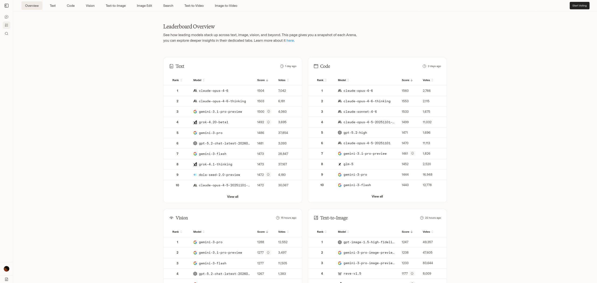
Byta modell kostnadsfritt
På arena.ai kan ni fortsätta arbeta utan avbrott genom att byta modell när de kostnadsfria promptarna för den första är förbrukade.
Photopea - bildredigering direkt i webbläsaren
Photopea är ett kraftfullt, kostnadsfritt bildredigeringsverktyg i webbläsaren. Här kan ni justera färg, retuschera, lägga till text och arbeta i lager.
Det passar särskilt för finjustering av AI-genererade bilder.
Vi testar klonverktyget för att ta bort oönskade bilddelar.
Med Auto-Blend Smart gör vi sammanslagningen mjukare och naturligare.
Öppna verktyget på: https://www.photopea.com
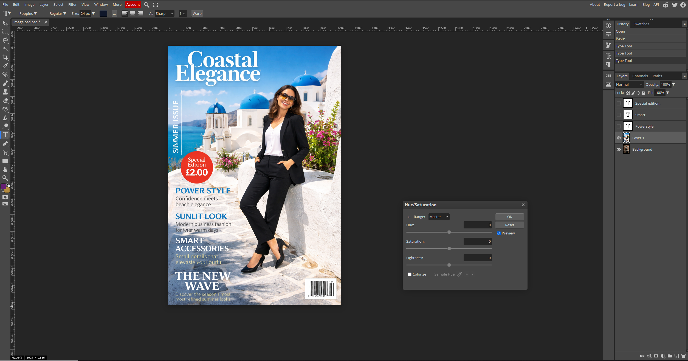
Var inte rädd för att använda färger!
Här ser vi hur en tydlig accentfärg snabbt kan flytta fokus i bilden och skapa en starkare visuell signal.
Små färgval kan ge stor effekt: prova dig fram stegvis tills bildens hierarki känns rätt.
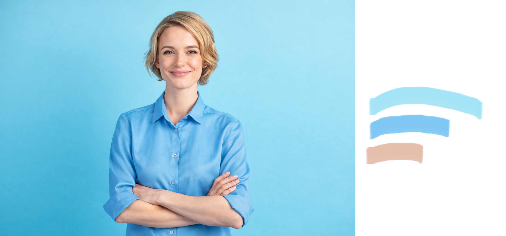
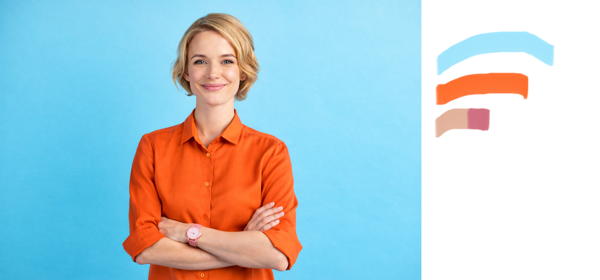
Bakgrundsfärger enligt färgteori
En stark tumregel för större ytor
Ljusa färger med låg mättnad, bland annat pasteller, är ofta säkra och behagliga som bakgrund. De ger en lugn bas där innehåll, text och detaljer framträder tydligare.
Varför fungerar de ofta bra?
- Högre ljushet ger en öppnare och lättare rumsupplevelse
- Lägre mättnad minskar visuell dominans
- Mjukare färgintryck ger mindre sensorisk belastning över tid
- Bakgrunden konkurrerar mindre med fokusobjekt
Mörka och mer kompakta färger
Mörka och kraftfulla färger kan ge elegans, dramatik eller identitet, men kräver oftare större precision i helheten.
Vad krävs då?
- Tydlig kontrast mellan bakgrund och text
- Balanserad användning av accentfärger
- Anpassning till ljusmiljö och skärm eller rum
- Kontroll över proportioner och visuellt fokus
Slutsats
För stora ytor är ljusa färger med låg mättnad ofta säkrast. Mörkare, intensiva färger kan ge stark effekt men kräver mer precision. Ett tryggt val är att låta de 60 % i 60-30-10-regeln vara en pastellfärg.
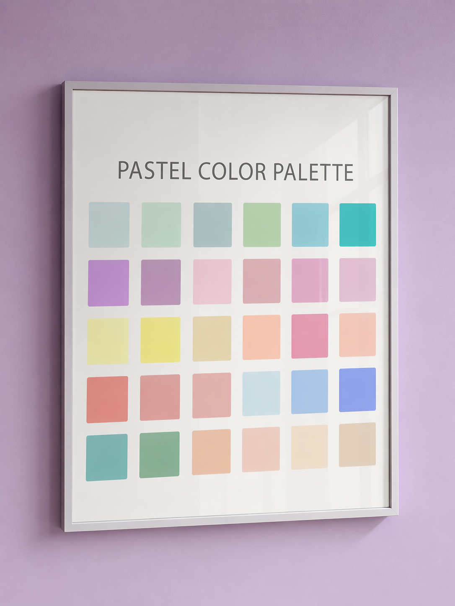
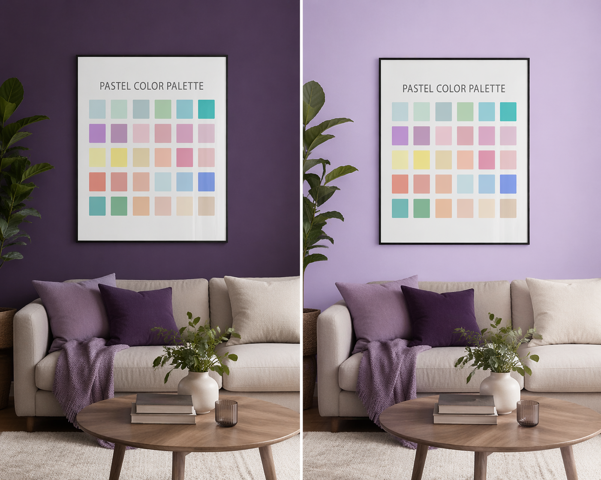
Praktiska övningar
Klicka på ett kort för att vända på det och se instruktionerna.
Övning 1
Klicka för att visaPrompting och textskapande
Syfte: Lära sig styra AI genom text, förstå iteration och efterredigering.
Deltagarna får uppdraget: Ni har blivit anlitade att skriva artiklar åt Torekovsmagasinet.
- Skriv en prompt i ChatGPT där AI ska skriva en artikel om grundlagsbytet i Sverige på 1970-talet.
- Läs igenom texten som skapas.
- Skriv en ny prompt där ni ber AI skriva om samma innehåll, men kortare och i klarspråk, anpassat för en bred allmänhet.
- Observera hur AI använder tidigare text och hur ni kan förändra innehållet steg för steg utan att börja om.
- Testa att justera tonen ytterligare, till exempel mer pedagogisk eller mer journalistisk.
Övning 2
Klicka för att visaBildskapande successiv prompting
Syfte: Förstå hur bilder byggs upp stegvis och hur promptformeln används.
- Skapa en bild av en åker.
- Be AI ändra åkern till gräs.
- Lägg till en röd stuga på gräset.
- Lägg till glada människor utanför stugan.
- Be att människorna ska bära rosa kepsar.
- Lägg till en bil utanför stugan.
- Ändra perspektivet (uppifrån, snett höger).
- Byt färg på bilen.
- Gör bilden fotorealistisk.
- Ändra tid på dygnet till kväll.
- Ändra stilen till tecknad.
- Ändra stilen till Picassos stil.
- Flytta scenen till Mars.
- Lägg till guldig text: "Boka din rymdsemester".
Promptformel: Subjekt, Handling, Miljö, Ljus/Kamera, Stil.
Övning 3
Klicka för att visaKommersiell poster
Syfte: Träna på att arbeta metodiskt i ett betalt uppdrag.
Scenario: Ni har fått i uppdrag att skapa en poster till en båtmässa som heter "Allt för sjön".
- Skapa först en bild utan någon text.
- När ni är nöjda med bilden, be AI lägga till mässans namn.
- Lägg därefter till mer text stegvis, till exempel datum eller plats, utan att förändra resten av bilden.
- Reflektera över varför det är viktigt att arbeta stegvis i kommersiella uppdrag.
Övning 4
Klicka för att visaBildredigering & förbättring
Syfte: Visa hur AI justerar befintligt material.
Del A: Objekt och miljö
- Utgå från bilen från tidigare övning.
- Ändra färg på bilen.
- Flytta bilen till New York.
- Gör bilden realistisk.
Del B: Ljussättning
Scenario: En mäklarfirma vill förbättra en bild.
Arbetssteg: Högerklicka på bilden nedan, välj Kopiera bild och klistra in den i AI-chatten för att modifiera den.
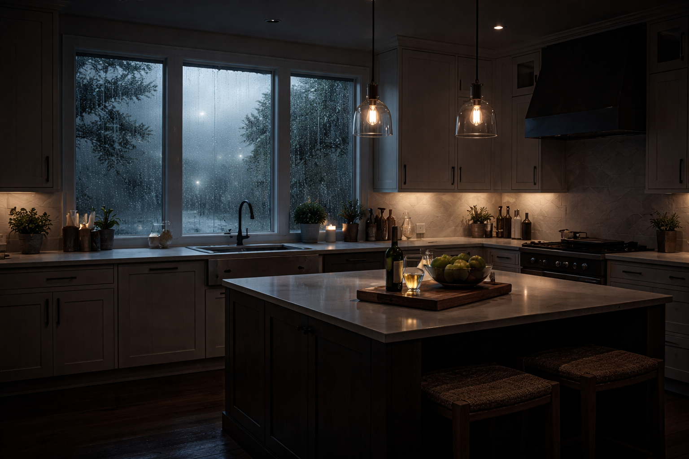
- Gör vädret ljusare utomhus.
- Justera ljuset i ett kök så det ser inbjudande ut.
Övning 5
Klicka för att visaPorträtt & personredigering
Syfte: Lära sig skapa professionella porträtt.
Välj referensbild: Ladda ner valfri bild nedan och använd den i övningen.
- Ladda upp den bild du valde.
- Be AI göra bilden till ett stilrent svartvitt porträtt.
- Be AI byta kläder på personen.
- Be AI ändra färgen på kvinnans kavaj till blå.
- Be AI att mannen håller upp en skylt med texten "AI-expert".
- Justera ljus och kontrast för ett professionellt uttryck.
Övning 6
Klicka för att visaBild till text och idé
Syfte: Koppla samman textinnehåll och bild.
- Be AI skriva en artikel på cirka 300 ord om AI-utvecklingen och datacenter i rymden.
- Texten ska vara så enkel att en 12-åring kan förstå den.
- När texten är klar, be AI skapa en bild som passar till artikeln.
- Reflektera över hur väl bilden förstärker innehållet.
Övning 7
Klicka för att visaSkiss till färdig bild
Syfte: Visa att teckningskunskaper inte krävs.
Referens: Titta på skissen nedan. Den visas som exempel och behöver inte laddas ner.
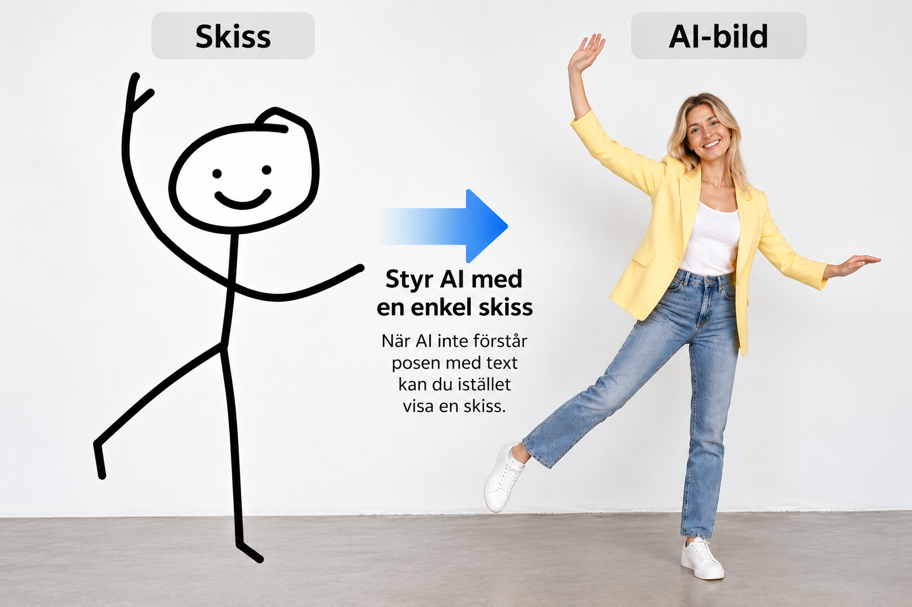
- Använd skissen ovan som visuell referens.
- Be AI tolka skissen och skapa en färdig bild.
- Justera stil, miljö eller uttryck vid behov.
Övning 8
Klicka för att visaFormat för sociala medier
Syfte: Förstå format och proportioner.
Genomgång av format:
- Facebook: 1:1, 1.91:1
- Instagram: 1:1, 4:5, 9:16
- TikTok: 9:16
Scenario: Marits Blommor
- Skapa en Facebook-banner som marknadsför rea på gula tulpaner.
- Anpassa bilden till rätt format.
- Reflektera över hur formatet påverkar uttrycket.
Övning 9
Klicka för att visaRedigera vardagsrum med AI (60/30/10)
Syfte: Träna bildredigering och färgbalans enligt 60/30/10-principen.
Referensbild: Använd bilden nedan som startpunkt.
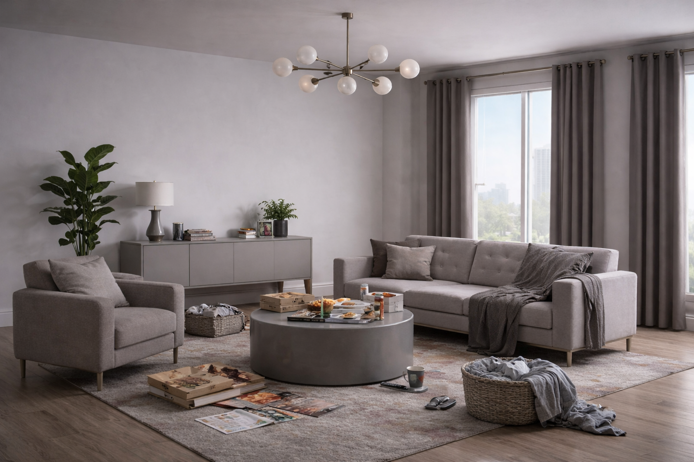
- Städa bort allt stök i bilden.
- Skapa en tydlig 60/30/10-fördelning i färgerna.
- Välj dominant färg för väggar.
- Välj secondary-färg för möbler.
- Lägg accentfärg på små detaljer.
Exempelprompt: "Clean and declutter the living room. Use a soft light blue as dominant wall color, warm beige furniture as secondary color, and a strong orange accent for pillows and small decor. Keep the room modern and balanced."
Övning 10
Klicka för att visaDesigna hemsida med 60/30/10
Syfte: Översätta färgprincipen till layout för webb.
- Välj dominant bakgrundsfärg (60 %).
- Välj secondary-färg för sektioner eller kort (30 %).
- Välj accentfärg för knappar och länkar (10 %).
- Säkerställ tydlig kontrast för text och CTA-knappar.
Exempelprompt: "Design a modern website layout. Use a soft green as dominant background, light beige for content sections, and a strong dark blue accent for buttons. Keep it clean and minimal with clear contrast."
Övning 11
Klicka för att visaCartoon i tre rutor
Syfte: Träna på att styra bildstil, humor och bildberättande i flera steg.
Referensbild: Använd serien nedan som inspiration.
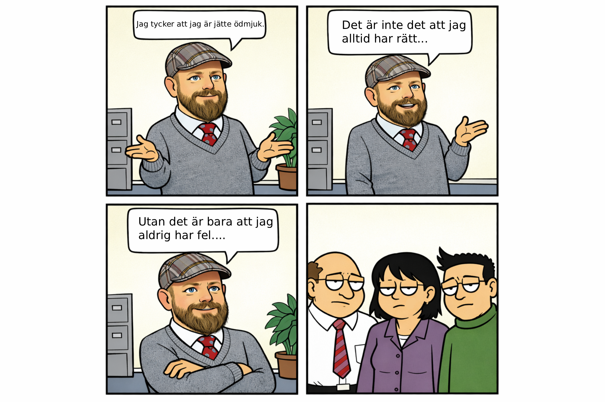
- Be AI skapa en cartoon i 3 rutor i samma ritstil som Dilbert.
- Bestäm ett enkelt tema, till exempel kontorsstress, möten eller teknikstrul.
- Be AI tydliggöra att alla tre rutorna ska höra ihop som en sammanhängande serie.
- Be AI lägga in en kort dialog eller punchline i sista rutan.
- Testa att justera ansiktsuttryck, kroppsspråk och bakgrund så att skämtet blir tydligare.
- Reflektera över hur stil, timing och text påverkar humorn.
Finetuning utan finetuning (smart hack)
Du kan få ett objekt mer konsekvent utan riktig finetuning.
Ladda upp minst fem bilder på objektet, gärna fler, ur olika vinklar och ljus.
Be till exempel Gemini Nano Banana placera objektet i en ny scen med samma form, material och detaljer.
Justera stegvis tills objektet känns konsekvent mellan bilderna.
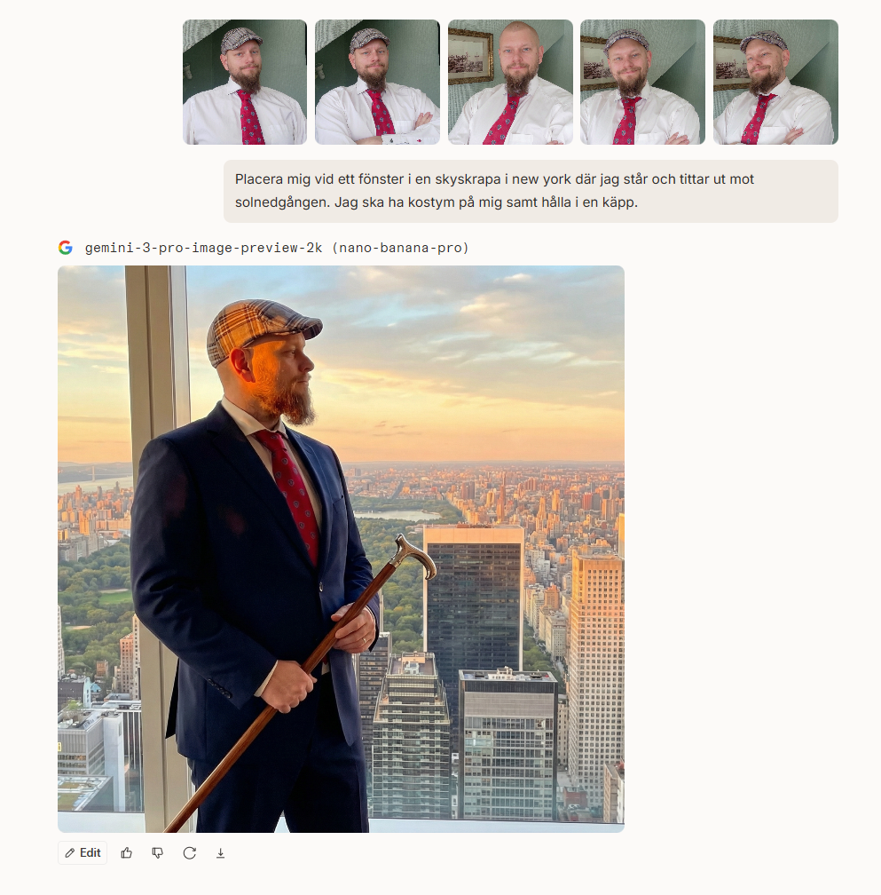
Hitta arbete som frilansande grafiker
Börja lokalt: gå in på hemsidor hos företag i din närhet och se vilka som behöver bättre grafik, bilder eller innehåll.
Kontakta dem kort och tydligt och erbjud hjälp med att skapa eller förbättra deras visuella material.
Vill ni få utländska klienter kan ni också använda plattformar som Upwork, Fiverr och Freelancer.

Juridik kring AI-bilder
Normalt behöver du inte kreditera ChatGPT eller Gemini när du använder en AI-genererad bild, exempelvis som bokomslag. Villkoren medger i regel kommersiell användning.
För upphovsrättsligt skydd kräver svensk rätt och EU-rätt verkshöjd, alltså tillräcklig originalitet och mänskligt skapande.
En helt AI-genererad bild utan kreativt mänskligt bidrag når ofta inte verkshöjd. Då finns normalt ingen upphovsrätt i bilden: ingen upphovsman kan göra upphovsrättsliga anspråk och flera kan i praktiken använda samma bild.
Om en människa styr, redigerar och bearbetar bilden kreativt kan insatsen däremot nå verkshöjd och ge upphovsrätt till den bearbetade bilden.
Informationen beskriver rättsläget i stora drag och är inte juridisk rådgivning.
Questions and Answers - upphovsrätt och AI-bilder
Klicka på ett kort för att se svaret.
Prejudicerande domslut (internationellt, per 5 mars 2026)
- USA, D.C. Circuit (18 mars 2025): Thaler v. Perlmutter fastslår att upphovsrätt kräver mänsklig upphovsman när AI-systemet anges som ensam skapare.
- USA, Supreme Court (2 mars 2026): certiorari nekades i mål 25-449, vilket lämnade D.C. Circuits linje gällande.
- EU-domstolen, C-5/08 Infopaq och C-145/10 Painer: etablerar originalitetskravet "author's own intellectual creation", dvs. mänskliga fria och kreativa val som grund för skydd.
Fråga 1
Vem har upphovsrätten?Vem har upphovsrätten om jag tar ett foto och sedan modifierar det med AI?
Upphovsrätten utgår normalt från originalfotot, alltså fotografen.
Om du tog fotot själv och använder AI som redigeringsverktyg (som Photoshop) är det i regel du som har rättigheterna.
Gör du egna kreativa bearbetningar kan även den nya versionen få skydd, om den når verkshöjd.
Vad gäller för AI-bilder 2026? I ChatGPT anger villkoren (1 januari 2026) att du äger outputen mellan dig och OpenAI. För Gemini/Google gäller att Google inte gör anspråk på äganderätt till genererat innehåll. Men i båda fallen måste du följa lag, tredje mans rättigheter och respektive licensvillkor.
Fråga 2
Vad betyder verkshöjd?Vad betyder verkshöjd och hur påverkar AI upphovsrätten?
Verkshöjd = tillräckligt självständigt och kreativt mänskligt skapande.
Ren AI-output utan mänskliga kreativa val saknar ofta upphovsrätt.
När du styr processen (promptar, väljer, redigerar) kan upphovsrätt uppstå genom din insats.
Fråga 3
Licensvillkor i AI-tjänsterVad händer om en AI skapar en bättre bild men inte ger bort rättigheterna?
Licensvillkoren styr användningen. Om rättigheter inte överlåts får du inte använda bilden fritt.
Det gäller även om bilden i sig saknar klassisk upphovsrätt.
Redigering i exempelvis Photoshop tar normalt inte bort avtalsvillkoren.
Fråga 4
Ny bild i annan AI?Kan man lösa problemet genom att mata bilden i en annan AI och generera en ny version?
Inte automatiskt. Om den nya bilden tydligt bygger på originalet kan den räknas som en bearbetning eller ett härlett verk.
Då kan originalets rättigheter fortfarande påverka vad du får göra.
Tumregel (2026): Ren AI-bild kan sakna upphovsrätt, men licensvillkor gäller fortfarande. AI som kreativt verktyg kan ge rättigheter genom mänskliga kreativa val.
Exempel
Bokomslag med AIExempel: bokomslag skapat med AI
Du kan ofta använda AI-bilder kommersiellt i bokomslag om tjänstens licens tillåter det.
OpenAI/ChatGPT och Google/Gemini (2026): normalt får du sälja materialet och tjäna pengar om du följer respektive villkor, och kreditering av OpenAI eller Google krävs normalt inte som standardkrav.
Krediteringskrav kan däremot variera mellan plattformar.
AI-genererat material kan ibland likna befintliga verk. Därför bör materialet granskas och vid behov bearbetas för att minska risken för upphovsrättsintrång.
Kontrollera alltid villkoren för tjänsten innan publicering.
Prompt engineering för bilder
För AI-bilder fungerar ofta en enkel struktur: motiv, handling eller form, miljö, stil, ljus och perspektiv.
Beskriv vad motivet föreställer och gör, hur det placeras i miljön, dess stil eller medium (illustration, fotorealism, akvarell), ljus (mjukt studioljus, morgon eller kväll) samt perspektiv (närbild, vidvinkel, ovanifrån eller låg vinkel).
Börja med en kort prompt som översiktligt täcker delarna. Justera sedan en detalj i taget.
Exempel på en kort och öppen prompt:
“A modern city skyline at sunset.”
En kort prompt ger modellen stor frihet att välja arkitektur, färger och komposition.
Exempel på en mer detaljerad prompt:
“A modern coastal city skyline with glass skyscrapers and busy streets, evening atmosphere, photorealistic style, warm sunset light reflecting in the buildings, wide-angle view from a rooftop overlooking the harbor.”
Den detaljerade prompten styr motiv, miljö, stil, ljus och perspektiv mer exakt.
Har du en tydlig vision kan en detaljerad prompt fungera bäst. Är idén öppen ger en kortare prompt modellen mer frihet att föreslå visuella lösningar. Förfina sedan bilden stegvis i nya prompts.
Avancerat moment för den som vill bli proffs på redigering:
Be AI skapa en strukturerad JSON-beskrivning av bilden. Då får du en teknisk beskrivning av perspektiv, objekt och relationer att justera, utan att formulera alla detaljer själv, så att redigeringen blir mer precis.
Arbetssteg:
- Välj en bild och kör prompten nedan i ChatGPT, Gemini eller en modell via Arena.ai.
- AI ger en JSON-beskrivning av perspektiv, objekt och struktur.
- Be AI ändra JSON-beskrivningen, exempelvis genom att byta jeten i scenen mot en blå lastbil.
- Justera position, storlek, material och relationer mellan objekt i JSON-filen, själv eller med AI:s hjälp.
- Skicka uppdaterad JSON tillsammans med originalbilden och be AI genomföra ändringarna.
- Uppdatera JSON-texten och kör igen om du vill ändra fler bilddelar.
Med både originalbilden och en strukturerad instruktion kan AI göra mer kontrollerade ändringar och bevara övriga detaljer.
Skriv gärna "Behåll allt i bilden och ändra bara XYZ" för att markera att övriga detaljer ska lämnas orörda.
Prompt:
Analyze the image and output structured JSON including:
- camera perspective (angle, height, orientation)
- lens estimation (wide, normal, telephoto)
- depth structure (foreground, midground, background)
- spatial relationships between objects
- object-level metadata:
- position (relative coordinates)
- size (relative scale)
- material
- occlusion relationships
Focus on geometric and photographic interpretation, not just semantic description.
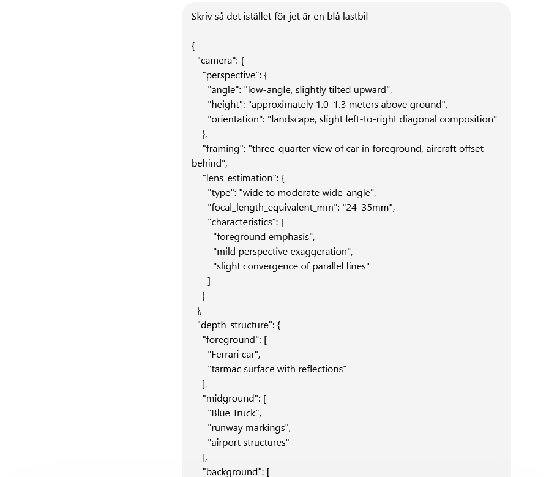
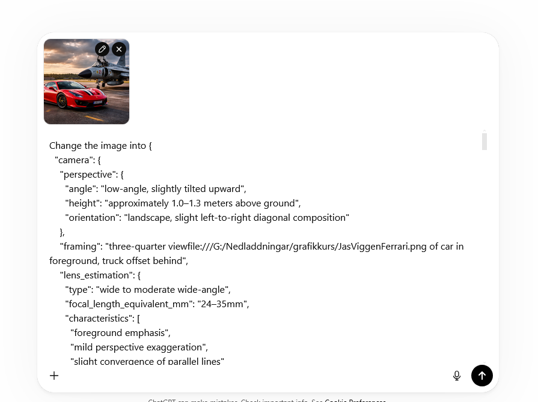
Materialet uppdateras löpande
Jag kommer successivt att uppdatera materialet ovan efter hand.
Mejla mig på a.jansson.2025@proton.me vid frågor och funderingar.